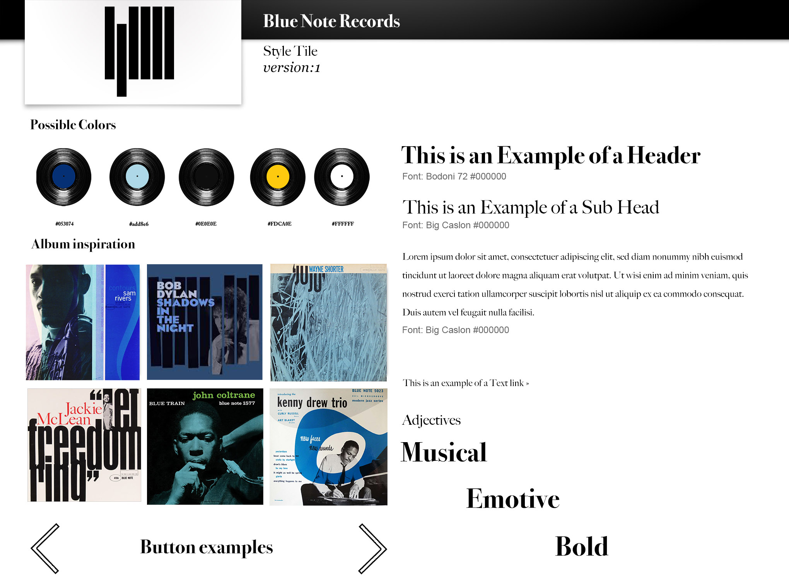
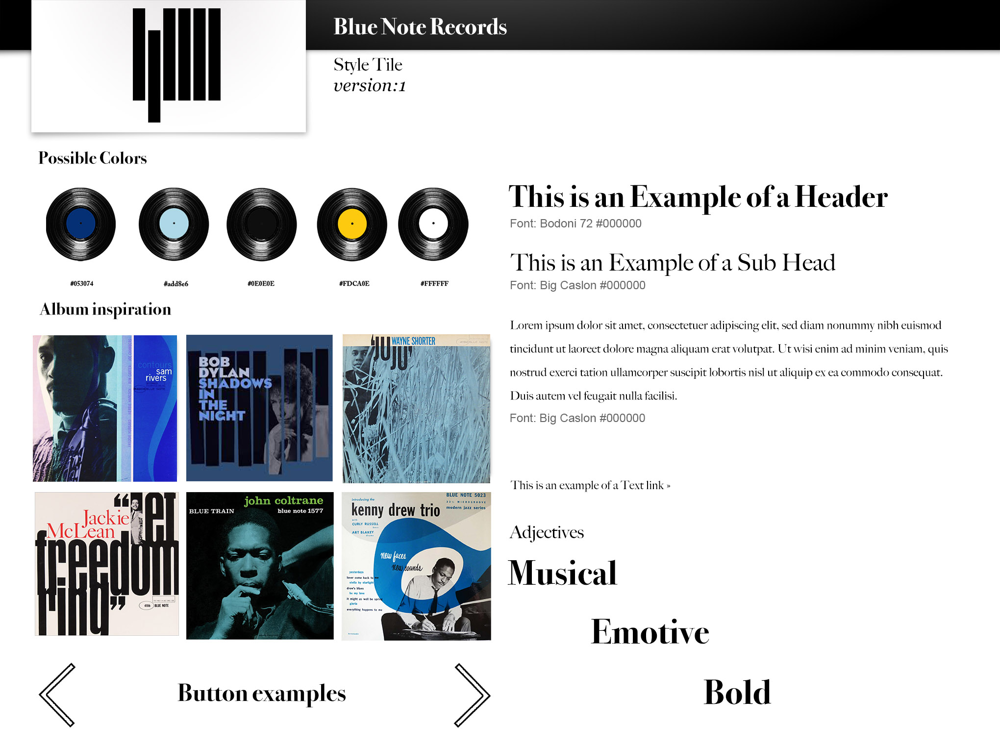

01.04.01 Responsive website
Below you can read my reflections followed by pictures from the project
What did I learn?
There were lots of firsts in this project/module: first time working from a style tile and first time really using HTML and CSS. I had worked a bit in Photoshop and Illustrator previously, but this gave me the chance to explore that further.
I was also introduced to user tests, more specifically the 5-second test and the Trunk test or Gangster test, it was insightful to learn how you can get lost in your own project and think everything is fine when there are in fact obvious issues for other users.
For example, my mother really wanted to click the album pictures even though they didn't lead anywhere. (I was subsequently introduced to The Mom Test book, and it seems that in this case, my site didn’t pass it.
I also deepened my knowledge on composition, including color theory, gestalt laws and contrasts
What would I change today?
Since this was one of the first projects there are a number of things I would change should I create another iteration. I was never happy with the design, but I did feel that the style was communicagted effectively throughout the site.
Other reflections
- I tried implementing grids in my website, but since I only had one column on most of the pages it wasn’t really used as much as it could have been.
- I had attempted to implement the Big Caslon typography on the website, but this did not work in the end.
- Responsiveness As you can also see from the screen-grabs below, the responsiveness isn't working optimally either. The navigation bar goes from being inline to block, but it isn't centered (which is not good gestalt!)

 
